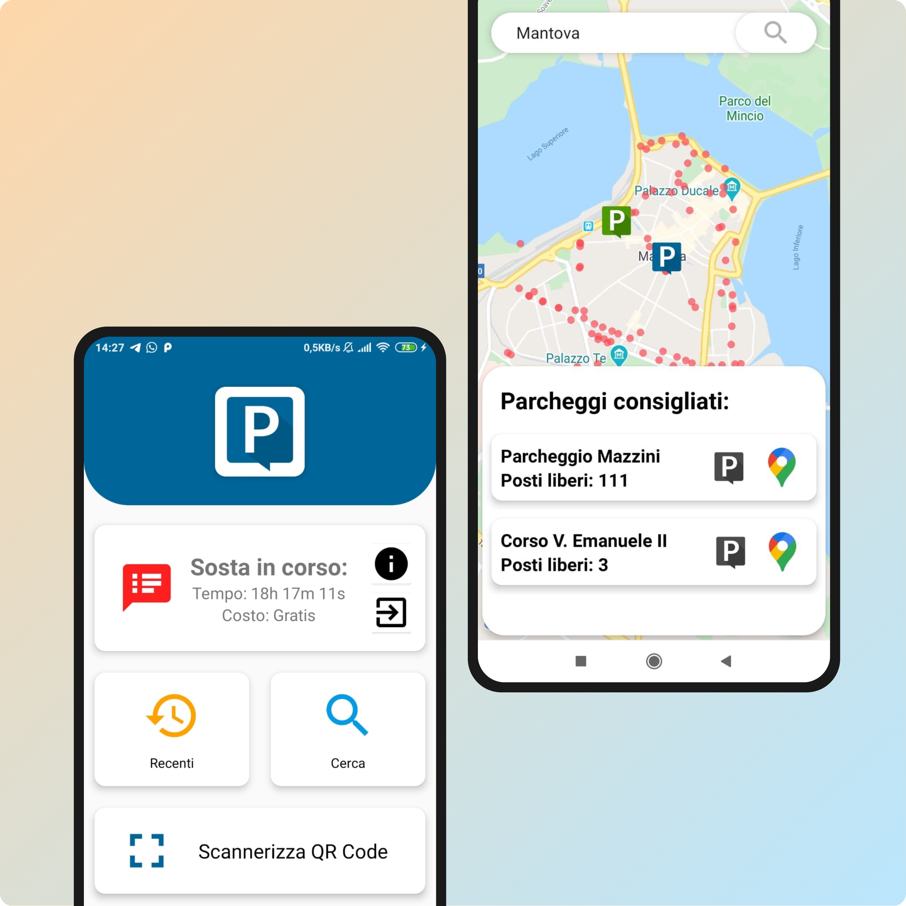
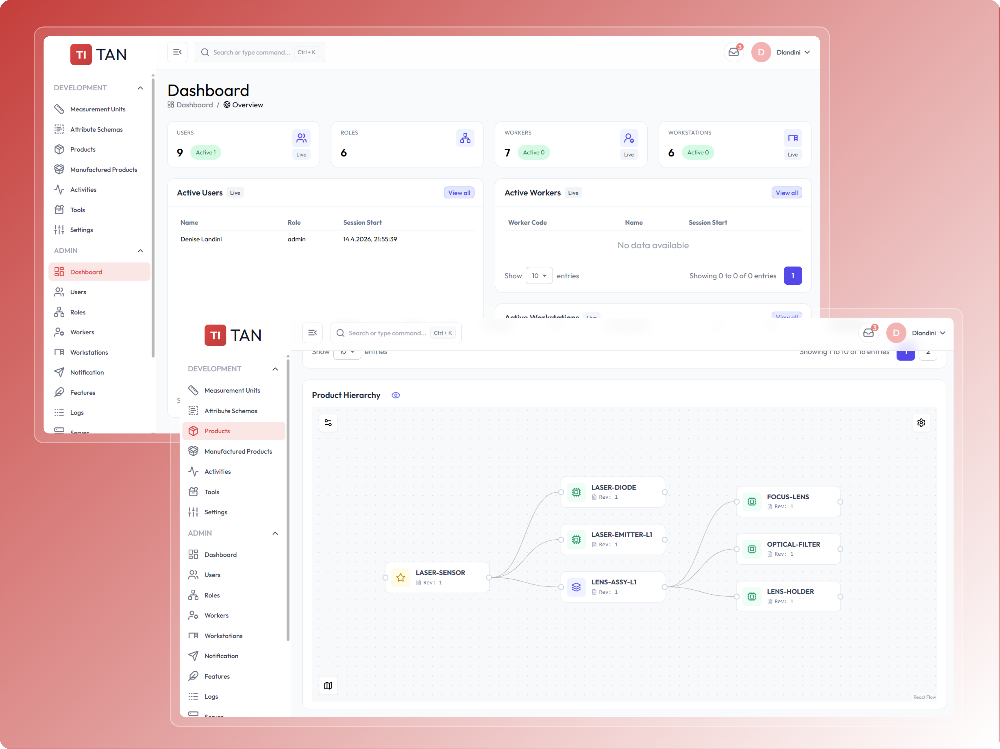
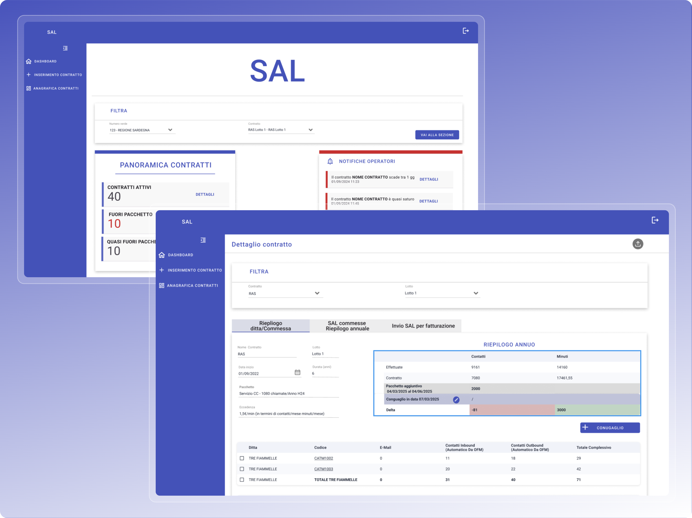
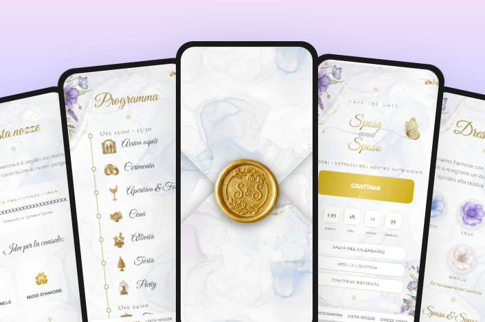

DENISE
LANDINI
Interaction Designer & AI Engineer
I design intuitive, human-centered experiences for complex systems, bridging AI, robotics, and real-world products.
About
I design intuitive, human-centered experiences for complex systems, specializing in artificial intelligence, robotics, and human-machine interaction. I transform advanced research into accessible, real-world products.
Design as a Strategic Tool
Beyond aesthetics, I focus on solving complex problems through technical constraints and human-centered logic.
01. Strategic Reframing
I don't just accept a brief; I challenge it. I look for the "Why" behind every feature.
- Stakeholder Synthesis
- Problem framing & Reframing
- Identifying North Star Metrics
02. Informed Trade-offs
I balance user desires, business goals, and technical feasibility. I make conscious decisions on what to prioritize to deliver the most value.
- Technical Feasibility Checks
- Balancing UX vs. Dev Effort
- MVP Definition
03. Radical Iteration
The first solution is rarely the best. I leverage sketches, wireframes, and rapid prototyping to fail fast and learn quickly. I present multiple solutions to stakeholders, explaining the 'pros and cons' of each approach.
- Lo-fi to Hi-fi Prototyping
- Usability Feedback Integration
- Continuous Improvement Mindset
04. High-Fidelity Execution
Details matter. I deliver pixel-perfect designs with clear documentation for developers. I obsess over micro-interactions, accessibility, and design systems to ensure a seamless handoff and a polished end-product.
- Atomic Design Systems
- Motion & Interaction Details
- Developer Handoff Excellence
Experience
Interaction Designer & Front-End Developer
Triple-IN GmbH
- Led the end-to-end design and development of internal digital tools, transforming manual Excel-based workflows into a scalable, user-centered platform.
- Designed and implemented a React and Swift ecosystem integrated with Odoo ERP, improving data traceability, usability, and operational efficiency. arrow_right_alt View TITAN Process
Full Stack Software Engineer
Teleconsys spa
- Full-stack implementation of DeskNow, an enterprise smart-office platform, built using C# and .NET.I worked closely with end users to understand requirements and improve usability, contributing directly to the user experience and system design. Additionally, I designed and developed a custom chatbot to automate real-time resource booking and provide user support.
- Lead Full-Stack Developer for Nucleco, where I managed the entire software lifecycle for radiological waste management, overseeing stakeholder requirements, system architecture, and the end-to-end deployment of mission-critical features to optimize data reliability and complex operational workflows.
- Innovation Team specialist focused on architecting an AI-driven RAG (Retrieval-Augmented Generation)system for the legal sector, leveraging LLMs and Vector Databases to automate complex document analysis and litigation workflows.
-
Legacy Project Optimization, focused on refactoring
existing applications to significantly enhance UI/UX design,
system performance, and overall graphic consistency, ensuring
a modern and seamless experience for real-world users.
arrow_right_alt View CNS Process arrow_right_alt View SAL Process
Education
Master's Degree in Artificial Intelligence and Robotics
La Sapienza - University of Rome
- Specialization in AI and complex systems: machine learning, neural networks, reinforcement learning, computer vision and robotics.
- Expertise in designing intelligent and autonomous systems, including robot modeling, control and human-robot interaction.
Thesis: Quaternion Neural Network applied to Visual Odometry System
Final grade: 110L/110 with honors
Bachelor's Degree in Computer Engineering
University of Modena and Reggio Emilia
- Strong foundations in algorithms, data structures, networks and object-oriented programming.
- In partnership with Bosch and the Municipality of Mantova: engineered a monitoring system for IoT parking sensors with Java backend and Android app for real-time occupancy analytics.
Thesis: IoT applied to Mobility — Smart Parking with Bosch
Final grade: 101/110
View on YouTube arrow_right_alt View Process
Selected Projects
Smart parking
Interaction Designer & Full-Stack Engineer
Problem:Drivers in Mantova faced high frustration and increased CO2 emissions due to urban traffic generated by the constant search for available parking spots.
Approach:I bridged the gap between Bosch hardware engineering and user experience, managing IoT constraints like LoRaWAN latency through collaborative design and predictive data modeling.
Solution: I designed an Android interface that utilizes QR code synchronization for privacy-compliant tracking and features proactive UI fallbacks to redirect users if a spot is taken by a non-app user.
Impact:The system significantly reduced cruising time and fuel waste, while predictive analytics empowered users to plan trips based on 24-hour occupancy trends.
UX Case Study · Engineering Firm Platform
Interaction Designer & Full-Stack Engineer
Problem: Complex technical services lacked a clear digital experience, creating friction for users trying to navigate professional offerings.
Approach: Applied UCD methodology, focusing on information hierarchy and mobile-first interactions to simplify complex domain knowledge.
Solution: A responsive platform with intuitive navigation and optimized performance across all devices.
Impact: Reduced user friction and improved engagement by making professional services accessible on-the-go.

TITAN
Interaction Designer & Frontend Developer
Problem: The reliance on error-prone Excel spreadsheets led to frequent data loss, impossible component tracking, and high cognitive load for operators during LiDAR production.
Approach: A collaborative, user-centered methodology was adopted, involving on-site workshops, iterative prototyping, and close synergy with developers to ensure technical feasibility.
Solution: A high-legibility interface was developed and integrated with the Odoo ERP, featuring role-based access control and specialized layouts designed for fast data entry in industrial environments.
Impact: The solution achieved a 45% reduction in human error, cut onboarding time by 30%, and saved management 12 hours per week through automated data synchronization.

SAL
Interaction Designer & Frontend Developer
Problem: Fragmented business logic across departments and difficult-to-interpret service data led to administrative inefficiencies and frequent disputes regarding extra billing costs.
Approach: I led collaborative Figma workshops to map complex contract lifecycles and implemented an Atomic Design system to ensure corporate brand consistency and scalability.
Solution: I developed a modular platform featuring high-contrast dashboards for critical deadlines and automated summary tables that calculate Delta variances to justify costs with evidence-based data.
Impact: The solution transformed raw data into transparent billing authorization requests, reducing cognitive load for operators and ensuring financial clarity for final clients.

UX Case Study · Interactive RSVP Experience
Interaction Designer & Frontend Developer
Problem: Traditional invitations lack accessibility for users with low digital literacy, leading to confusion and high drop-off rates.
Approach: Prioritized clarity and visual affordances, focusing on the mental models of elderly users to ensure a frictionless flow.
Solution: A minimalist web app with a simplified RSVP system and clear feedback loops.
Impact: Achieved high completion rates across all age groups through an inclusive and delightful user journey.
Explore Project View on GitHub
Interactive Graphics · Physics-Based Prototyping
Graphics Programmer & Interaction Designer
Problem: Creating responsive digital environments requires seamless integration of physics and user proximity.
Approach: Developed a 3D scene in WebGL focused on real-time spatial interactions and collision detection.
Solution: An immersive world where entities react dynamically to the character's presence through fluid animations and lighting.
Impact: Demonstrated the ability to build high-fidelity prototypes that enhance user delight through responsive environmental feedback.

Human Robot Interaction · Gesture and Face Recognition
Graphics Programmer & Interaction Designer
Problem: Drone control is often unintuitive and reliant on manual interfaces (e.g., joysticks), limiting accessibility and natural human interaction.
Approach: A multimodal computer vision approach using ML (MediaPipe) to combine hand gestures, face tracking, and holistic body pose recognition.
Solution: A modular system that translates visual human inputs into real-time drone commands, enhanced with adaptive control (PID) and state-based logic.
Impact: Enables more natural and intuitive human-drone interaction, with potential applications in assistive technology, surveillance, and user-centered autonomous systems.
View on YouTube View on GitHub
Neural Network · High-Precision Stroke Detection
Deep Learning Engineer & UX Researcher
Problem: In medical diagnostics, AI inaccuracy can lead to clinical distrust and diagnostic errors.
Approach: Utilized Quaternion Neural Networks to capture complex MRI correlations, reducing false positives for better clinical reliability.
Solution: An X-Net implementation that provides stable and precise lesion segmentation boundaries.
Impact: Provided a more reliable decision-support tool for specialists, prioritizing accuracy and safety in critical environments.

Digital Trust · Image Forgery Detection System
Computer Vision Researcher
Problem: Digital deception through image splicing undermines user trust in online information and security.
Approach: Enhanced RRU-Net with a Feature Selection Module (FSM) to adaptively highlight informative artifacts of tampering.
Solution: A robust detection model that identifies subtle manipulation in authentic-looking images.
Impact: Contributed to a safer web ecosystem by providing technical solutions for privacy and integrity verification.


Explainable AI · Agent Behavior Transparency
AI Interaction Researcher & Engineer
Problem: Reinforcement Learning agents act as "black boxes," making it difficult for users to trust or understand autonomous decisions.
Approach: Implemented a framework to translate complex rewards into "intended outcomes," making agent logic human-readable.
Solution: A system that generates semantic explanations for agent actions based on future predicted states.
Impact: Enhanced user trust by bridging the gap between complex AI logic and intuitive human understanding.


Medical Robotics · Musculoskeletal Motion Analysis
Biomechanical Modeler & Robotics Engineer
Problem: Assistive devices often fail because they don't account for diverse biomechanical needs.
Approach: Developed a dual-scale musculoskeletal model to evaluate joint interactions and motor dynamics.
Solution: A simulation framework that provides quantitative data for personalized rehabilitation and robotic design.
Impact: Enabled more user-centric design for assistive robotics, ensuring devices adapt to the user's specific physical constraints.


Autonomous and Mobile Robotics · Predictable Path Planning
Robotics Software Engineer
Problem: Robots in human environments often move in unpredictable ways, causing user anxiety or safety concerns.
Approach: Integrated A* algorithms with kinematic constraints to ensure paths are smooth and human-readable.
Solution: A grid-based navigation system for differential drive robots that prioritizes collision-free, fluid movement.
Impact: Improved the human-robot interaction experience by making autonomous behavior more predictable and reliable.


Skills
Design
- Interaction Design
- User Flows & Wireframing
- Prototyping (Figma)
- Accessibility (WCAG)
- Information Architecture
Web developing
- HTML5
- CSS
- JavaScript
- C# (.NET)
- C
- C++
- React
- PHP
- WebGL
Database
- MySQL
- PostgreSQL
- MongoDB
- MicrosoftSQLServer
- PHP
- Java
- Eclipse
AI & ML
- Python
- Keras
- PyTorch
- OpenAIGym
- Anaconda
- GoogleColab
Robot Programming
- Matlab
- OpenSim
Tools & Workflow
- Figma
- Git / GitHub
- Agile / Scrum
- User Testing
- Prototyping & Iteration